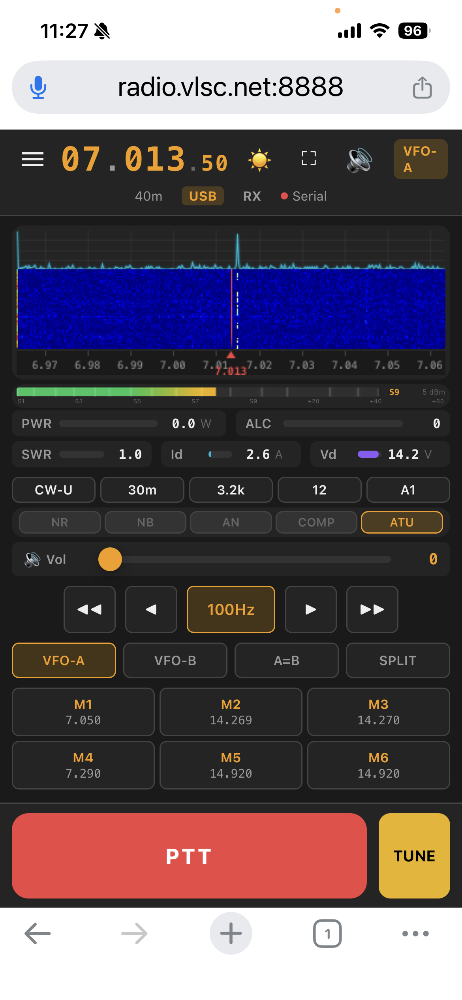

八重洲 FT-710 HF/50MHz 电台的软件化 SCU-LAN10 替代方案。 FT4222 SPI 实时 FFT 频谱图 + 瀑布图、双向 Opus 48kHz 音频、 4 路 WebSocket 全功能 CAT 控制——无需 200 美元的硬件盒子。

FT-710 Web 控制 — iPhone 上的 FFT 频谱图 + 瀑布图
两分钟了解 FT-710 Web Control：远程操控、实时频谱、双向音频。
FT4222 SPI 真实频谱、双向 Opus 音频、全功能 CAT 控制与多层 PTT 安全——一切专为 FT-710 打造，全链路零中间件。
850 点 FFT 频谱，约 21 fps，直接读自 FT-710 DSP 芯片的 FT4222 SPI 接口。频谱管道感知发射状态：PTT 期间干净暂停，松开后约 1 秒重新同步。FT4222 不可用时自动回退到 S 表合成频谱。
EMA 平滑的频谱折线叠加在 120 行历史瀑布之上。共享 Floor/Ceil 控制、六种色图，点击频谱任意位置直接 QSY。
端到端统一 48 kHz 编解码域：RX 采集 → Opus 64kbps → 浏览器 AudioWorklet；浏览器麦克风 → Opus CBR → 服务器 → 电台。 包括 Windows 在内的所有平台，都把 48 kHz 编解码域桥接到 FT-710 固定 44.1 kHz USB 音频设备域（每 20 ms 960→882 采样）。
Enhanced COM 口 38400 波特直连串口 CAT。40+ 命令：频率、15 种 模式、23 档滤波带宽、VFO A/B、分频、前置放大、衰减、NR/NB/AN、 压缩器、天调、AF/RF/麦克风增益。
100ms→5s 智能间隔，0.25 秒单查询超时上限，优先级抢占保证 PTT 绝不等待轮询周期。用户命令后的在途过期读取一律丢弃。
Canvas S 表（S1–S9+60dB）带 dBm 读数，完整发射遥测： PWR / ALC / SWR / Id / Vd / COMP。记忆频道一键召回；所有界面 偏好均以 Cookie 持久化。
可选的联网 ATR1000 天线调谐器：学习到的 LC 继电器值随每次频率 变化自动应用；服务端调谐辅助自动执行"载波—测量—保留或回滚" 全流程。
按住发射、松手即停。Fire-and-forget TX0 + 500ms 发射状态轮询 + 浏览器看门狗。最后一个客户端——或 TX 音频属主——断开时服务端 强制切回接收。
为 iPhone Safari 优化：安全区适配、PWA 清单与 Service Worker 离线缓存、Wake Lock 防息屏、全屏切换，另有原生 SwiftUI 配套 应用。
Windows 11/12 x64——内嵌 Python 3.12 运行时，无需手动安装 Python。开始菜单启动器，用户配置存于 %LOCALAPPDATA%。
MRRC-FT710-Setup.exe — v1.8.0 稳定版
35.2 MB · x64
SHA-256: 36a48a5f3f325d112937751bddcdebc581039d0484a40c95c1b00fd4bcc170ea
v1.8.0 稳定版保持浏览器/Opus 侧 48 kHz，并始终把每个 960 采样的 TX 帧转换为 FT-710 固定 44.1 kHz 设备域的 882 采样；PortAudio 重初始化后仍保持该边界。TX 会话日志新增队列丢帧计数，同一会话重连 可安全替换陈旧的音频所有权。Windows 构建、439 项测试、安装/启动/ 卸载及内置文件检查均已通过；真实射频监听仍由操作员侧完成验收。
缺少 FTDI DLL 时自动回退到 S 表合成频谱——CAT 控制与音频不受影响。 macOS / Linux / 树莓派请从源码运行（见下方快速上手）。
Windows 用户走安装包路线；macOS / Linux / 树莓派从源码运行。 两条路线殊途同归，都是同一个浏览器界面。
为 FT-710 Enhanced COM 口安装 Silicon Labs CP210x VCP 驱动。 需要 FT4222 真频谱时再装 FTDI D2XX。
设备管理器 → 端口 (COM 和 LPT) → Enhanced COM Port
MRRC-FT710-Setup.exe — v1.8.0，35.2 MB，x64。开始菜单 + 可选桌面快捷方式。
SHA-256 36a48a5f3f325d112937751bddcdebc581039d0484a40c95c1b00fd4bcc170ea
开始菜单 → Edit Configuration——设置 Enhanced COM 口和强密码。
%LOCALAPPDATA%\MRRC-FT710\ft710.env
开始菜单 → MRRC FT-710——启动器自动拉起服务并打开浏览器。
http://127.0.0.1:8888 → 登录 → 完整控制
从 GitHub 获取最新代码
git clone https://github.com/cheenle/mrrc_ft710.git
Python 3.12+，FastAPI、Uvicorn、PySerial、PyAudio、NumPy
cd mrrc_ft710 && pip install -r requirements.txt
指定串口启动——自动探测 FT-710 USB 音频设备
FT710_SERIAL_PORT=/dev/cu.usbserial-XXXX python server.py
网络内任意设备——手机、平板、电脑。默认密码：ft710
https://服务器IP:8888 → 登录 → 完整控制
获取 FT4222 SPI 真实频谱需安装 libft4222 + libftd2xx（可从 wfview 应用包或 FTDI 官网获取）。CAT 控制与音频无需任何 FTDI 库。
4 条 WebSocket 连接，零外部中间件依赖，完全基于 Python 异步框架构建。
SwiftUI 配套应用（iOS 17+）——与浏览器共用同一套 4 通道 WebSocket 协议，为单手移动操作优化。
频率（直接输入 / 步进 / 波段跳转）、VFO A/B、模式、滤波带宽、 前置放大/衰减、AGC、NB/NR/ANotch、射频功率、麦克风增益、 静噪——全部在 iPhone 上完成。
850 点实时瀑布配 FFT 曲线，色图与 Web 界面一致。S 表加发射 仪表（PWR / SWR / ALC / COMP）以及记忆频道列表。
RX：Opus 48kHz 解码并从机身扬声器播放。TX：48kHz 麦克风采集、 20ms PCM 帧——按住 PTT 即讲话。
早期版本——需从源码构建
需要实体 iPhone（模拟器不支持——内置 libopus 仅限 arm64 真机）、 iOS 17+、Xcode 15 + XcodeGen，以及启用 TLS 的服务端。2026-07-20 审计发现的 P0 PTT 安全问题已解决——TX 上行属主跟随实际按键的 客户端。